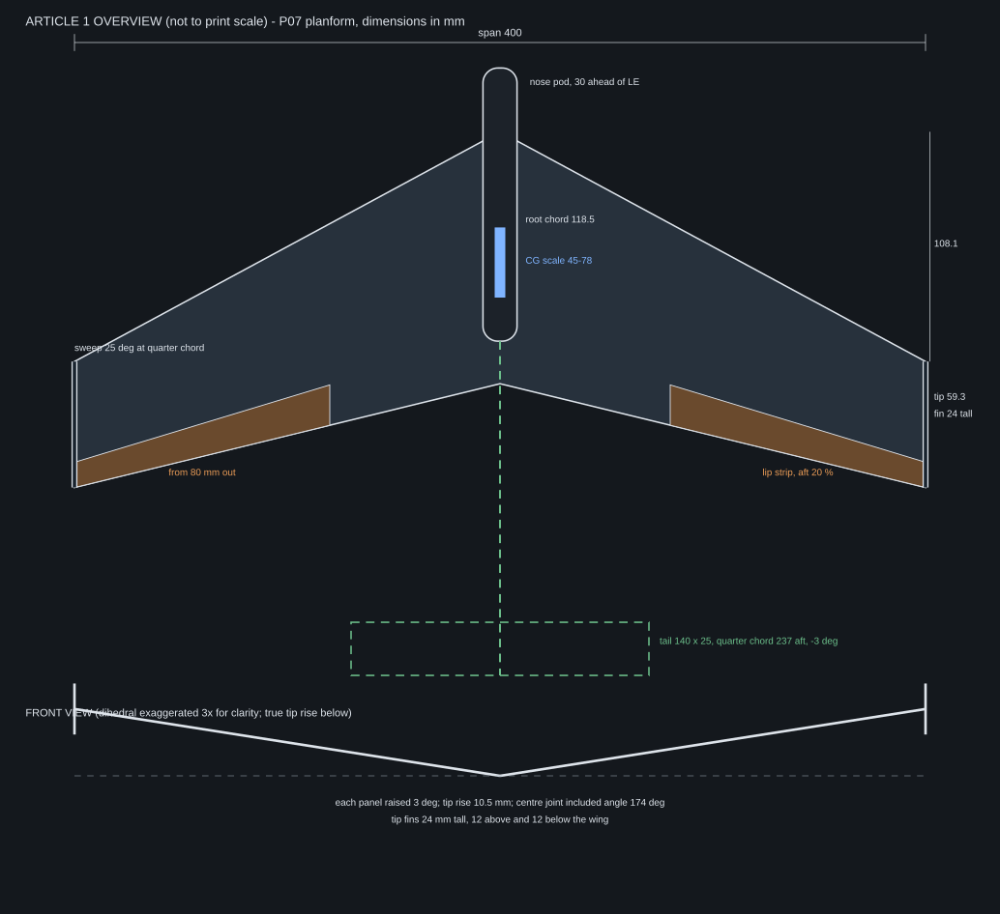
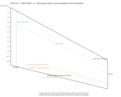

Article 1: P07 test article
Design drawings from model numbers and assumed material densities. Nothing is measured yet. Full specification and test card: rigid_glider/ARTICLE1.md.
Overview

Cutting templates, full size
Open each one and print at 100% scale with fit-to-page turned off. Check the 100 mm bar with a ruler before cutting.
- Wing panel template: landscape, Letter or A4. One template makes both panels; turn it over for the left one.
- Small parts template: portrait. Tip fins, tail, alternate tail, spare centre fin.



Mass and ballast at 8 N/m² (29.0 g all-up)
| Wing sheet (assumed density) | Wing | Ballast | Ballast station for CG 54 mm | CG 64 mm | CG 78 mm |
|---|---|---|---|---|---|
| 3 mm foam, 40 kg/m³ | 4.3 g | 19.4 g | 49 mm | 64 mm | 85 mm |
| 1.5 mm balsa, 160 kg/m³ | 8.5 g | 14.8 g | 33 mm | 53 mm | 81 mm |
| 3 mm balsa, 120 kg/m³ | 12.8 g | 10.2 g | 5 mm | 33 mm | 73 mm |
Stations are millimetres aft of the root leading edge. Assumes a 5 g printed centre piece. Other wing loadings: ballast_table.csv.